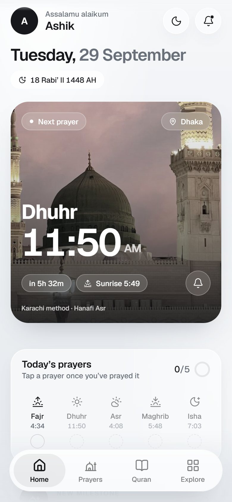
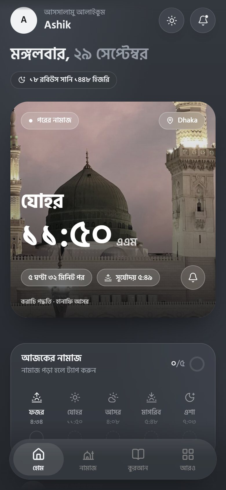
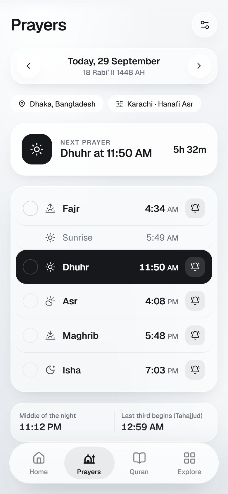
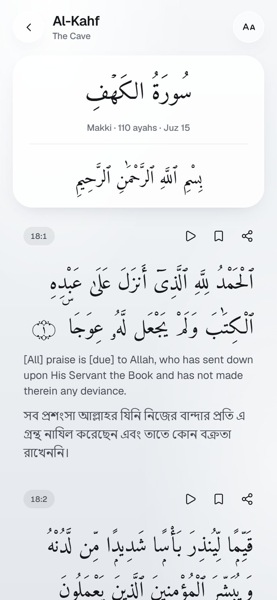
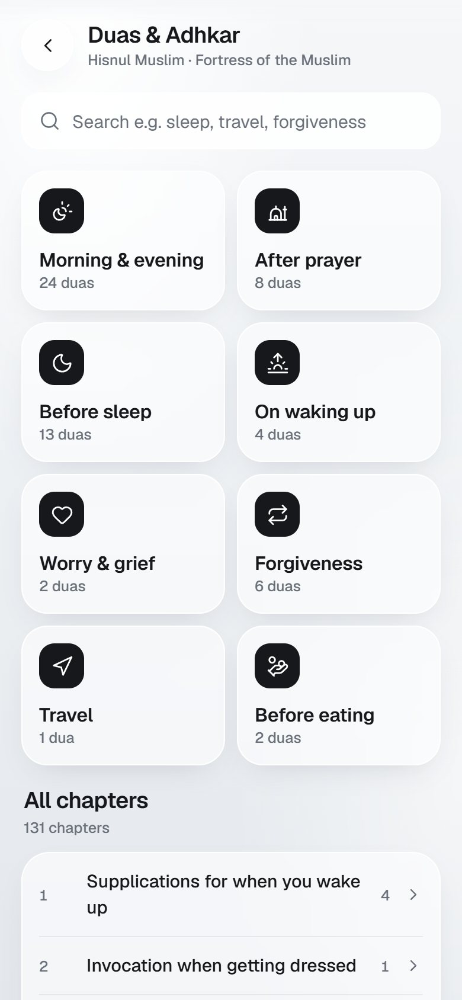

Prayer times you can trust. The Quran, close at hand.
A calm companion for every day: accurate adhan alerts, the Quran with Bangla and English meanings, and the duas of the Sunnah — in a clean design that stays out of the way.


ٱللَّهُ نُورُ ٱلسَّمَٰوَٰتِ وَٱلْأَرْضِ ۚ مَثَلُ نُورِهِۦ كَمِشْكَوٰةٍۢ فِيهَا مِصْبَاحٌ
“Allah is the Light of the heavens and the earth. The example of His light is like a niche within which is a lamp…”“আল্লাহ নভোমন্ডল ও ভূমন্ডলের জ্যোতি, তাঁর জ্যোতির উদাহরণ যেন একটি কুলঙ্গি, যাতে আছে একটি প্রদীপ…” — An-Nur 24:35
Our mark is that niche and its lamp: the arch, with the light inside.
Checked, not guessed
Prayer times, cross-checked
Noor’s times are checked against an independent calculation for nine cities on four dates across the year, both solstices included, from Dhaka and Sylhet to Makkah and London.
Words typed by hand
The Quran, duas, hadith and the 99 Names come from established sources, and the app names every one of them.
Your mosque, your method
Karachi method and Hanafi Asr for Bangladesh by default, eleven other methods, and minute adjustments to match your local timetable.
Made for the whole day
Prayer times and adhan
- Adhan, sound or silent alerts for each prayer
- Sehri and Iftar alerts in Ramadan
- Widgets for the Home Screen and Lock Screen
- Qibla compass and a monthly timetable


The Quran
- All 114 surahs in Uthmani script
- Bangla and English meanings, and transliteration
- Verse-by-verse recitation
- Bookmarks and a gentle daily reading goal
Duas, dhikr and more
- Hisnul Muslim, 131 chapters with sources
- Tasbih with the dhikr after prayer
- Hijri calendar, Zakat calculator, journal and tracker
- Private milestones that stay on your phone

Free for worship. Private by default.
The Quran, prayer times, adhan, Qibla, duas and trackers will never be behind a paywall, and there are no ads. Your data stays on your phone unless you choose to sign in and sync. Noor Plus is an optional way to support the work.